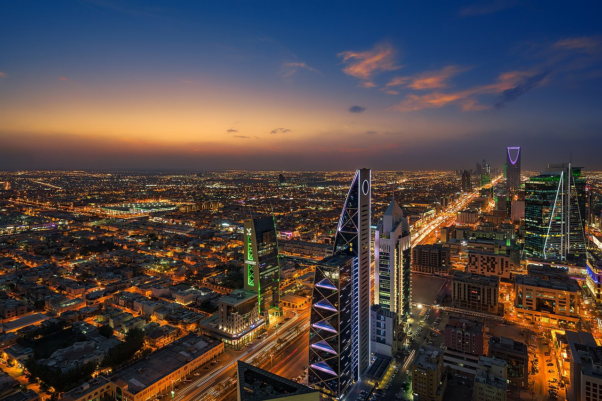

the capital of saudi arabia:
Riyadh is the capital city and seat of government of the Riyadh Province and the Kingdom of Saudi Arabia, the largest city on the Arabian Peninsula and the capital governorate of the Riyadh Province. Located in the center of the an-Nafud desert, on the
eastern part of the Najd plateau, the city sits at an average of 600 metres (2,000 ft) above sea level,[2] and receives more than 16 million tourists each year, making it the 2nd most visited city in the Arab world.[3] Riyadh had a population
of 7.6 million people in 2019, making it the most populous city in Saudi Arabia, 2nd most populous city in the Arab world (after Cairo), and the 38th most populous in Asia.[1]

Riyadh is the political and administrative centre of Saudi Arabia. The Consultative Assembly (also known as the Shura or Shura Council), the Council of Ministers of Saudi Arabia, the King and the Supreme Judicial Council of Saudi Arabia are all situated
in the city. Alongside these four bodies that form the core of the legal system of Saudi Arabia, the headquarters of other major and minor governmental bodies are also located in Riyadh.[8] The city hosts 112 foreign embassies, most of which
are located in the as-Safarat district or Diplomatic Quarter (Arabic: حي السفارات, romanized: Hayy as-Safarat, lit. 'District of Embassies') in the western reaches of the city.